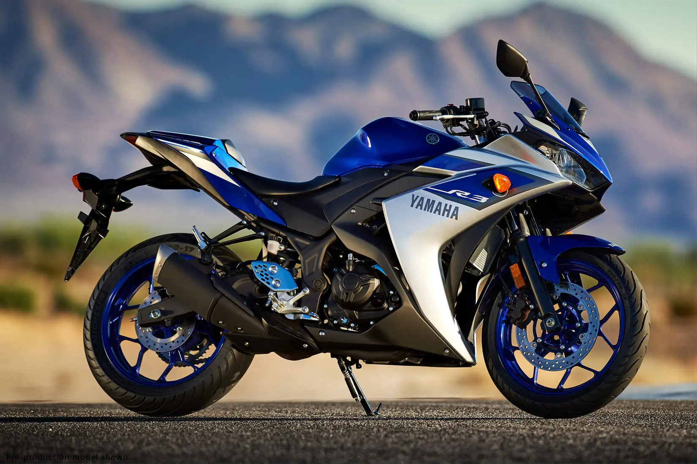

Olá a todos, Meu nome é Anderson Wallace e sou um entusiasta apaixonado por motos. Desde jovem, as motos sempre exerceram um fascínio sobre mim, seja pela liberdade que representam, pela emoção da velocidade ou pela engenharia impressionante por trás de cada modelo.
Ao longo dos anos, tive a oportunidade de explorar diferentes tipos de motos, desde esportivas de alta performance até clássicas repletas de história. Cada modelo tem sua própria personalidade e encanto, e estou sempre em busca de novas aventuras sobre duas rodas.
Neste site, vamos ver alguns modelos de motos esportivas e teremos algumas informações dessas motos como preço, cilindrada, potência e consumo médio.
Neste site, espero compartilhar minha paixão por motocicletas, discutir as últimas novidades do mundo das duas rodas e trocar experiências com todos os amantes de motos que compartilham dessa mesma paixão. Vamos acelerar juntos nessa jornada emocionante sobre o universo das motocicletas!
Yamaha YZF R-3

A Yamaha YZF R-3 é frequentemente elogiada por sua boa ergonomia, que proporciona conforto tanto em viagens longas quanto em sessões de pilotagem mais intensas. A moto também é conhecida por oferecer uma posição de pilotagem esportiva, mas sem comprometer o conforto do piloto. Agora com um design mais aerodinâmico, com novo para-brisa, faróis, entrada de ar frontal e novas carenagens laterais. Além disso, os novos faróis e luzes de posição são em LED, dando uma identidade mais moderna e agressiva para a Nova R3. Ela tem 321 cilindradas, potência máxima de 42 cv e torque máximo de 3 kgfm. O consumo médio é de 28 km/l e ela pode ser abastecida somente com gasolina. De acordo com a Tabela FIPE de maio de 2024, é possível encontrar uma Yamaha YZF R-3 zero km por ofertas a partir de R$ 35.330.
Kawasaki Ninja 400
A Kawasaki Ninja 400 se destaca por sua tecnologia embarcada, que pode incluir recursos como painel de instrumentos digital, iluminação em LED e sistemas de freios avançados, dependendo do modelo e das especificações específicas. Em resumo, a Kawasaki Ninja 400 é reconhecida por oferecer um equilíbrio sólido entre desempenho esportivo, usabilidade diária e tecnologia moderna, o que a torna uma escolha popular entre pilotos que buscam uma motocicleta esportiva versátil e empolgante. Traz motor de 399 cc, 4 tempos, 2 cilindros paralelos, refrigeração líquida, DOHC, 8 válvulas e abastecido com gasolina. O motor gera 48 cv de potência a 10.000 rpm e torque máximo de 3,9 kgfm a 8.000 rpm. Ela tem 399 cilindradas, potência máxima de 48 cv e torque máximo de 3,9 kgfm, com consumo médio de 25 km/l. É possível encontrar uma Kawasaki Ninja 400 zero km por ofertas a partir de R$ 36.711, de acordo com a Tabela FIPE de maio de 2024.
Kawasaki Ninja 650 R
A Kawasaki Ninja ZX-6R é reconhecida por combinar desempenho esportivo empolgante com praticidade para o uso diário, tornando-a uma escolha popular para pilotos que buscam uma motocicleta versátil e capaz de proporcionar diversão tanto nas ruas quanto em viagens mais longas. Traz motor de 649 cc, DOHC, 8 válvulas, 4 tempos, 2 cilindros paralelos, refrigeração líquida e movida a gasolina. O motor gera 68 cv de potência a 8.000 rpm e torque máximo de 6,5 kgfm a 6.700 rpm. Ela tem 636 cilindradas, potência máxima de 68 cv e torque máximo de 6,5 kgfm, com consumo médio de 16,8 km/l. É possível encontrar uma Kawasaki Ninja ZX-6R zero km por ofertas a partir de R$ 76.200, de acordo com a Tabela FIPE de maio de 2024.
Suzuki GSX-R 1000 R
A Suzuki GSX-R 1000 R é conhecida por incorporar tecnologia avançada, como sistemas de controle de tração, modos de pilotagem ajustáveis, suspensão ajustável e sistemas de freios de alta performance, proporcionando ao piloto uma experiência de pilotagem completa e envolvente. Em resumo, a Suzuki GSX-R 1000 R representa o ápice do desempenho esportivo da marca, sendo apreciada por pilotos que buscam uma máquina capaz de proporcionar emoção, precisão e potência em todos os aspectos da pilotagem. Tem 999 cilindradas, potência máxima de 185 cv e torque máximo de 11,9 kgfm, com consumo médio de 15,8 km/l. Seus bicos injetores de combustível com 12 orifícios oferecem uma melhor atomização do combustível e combustão mais eficiente. É possível encontrar uma Suzuki GSX-R 1000 R zero km por ofertas a partir de R$ 100.776, de acordo com a Tabela FIPE de maio de 2024.
Kawasaki Ninja ZX 10R
A Kawasaki Ninja ZX 10R tem um design que reflete sua natureza esportiva, com linhas aerodinâmicas e agressivas que conferem um visual marcante e contribuem para a estabilidade em altas velocidades. A ergonomia da moto é voltada para a posição de pilotagem esportiva, visando o máximo desempenho e controle. Além disso, a ZX-10R incorpora uma série de tecnologias avançadas, como sistemas de controle de tração, modos de pilotagem ajustáveis, suspensão eletrônica e sistemas de freios de alta performance, proporcionando ao piloto um controle preciso e confiante em diversas condições de pilotagem. Em resumo, a Kawasaki Ninja ZX-10R é uma motocicleta que representa o que há de mais avançado em termos de desempenho esportivo da marca, sendo apreciada por pilotos que buscam uma máquina capaz de proporcionar emoção, precisão e potência em níveis extremos. Tem 998 cilindradas, potência máxima de 203 cv e torque máximo de 11,7 kgfm, com consumo médio de 12,5 km/l. De acordo com a Tabela FIPE de maio de 2024, é possível encontrar uma Kawasaki Ninja ZX 10R zero km por ofertas a partir de R$ 118.190.
Suzuki GSX 1300-R Hayabusa
A Suzuki GSX 1300-R Hayabusa é uma lendária motocicleta esportiva de alta performance que conquistou fama por sua velocidade e design inovador. O nome "Hayabusa" significa falcão-peregrino em japonês, simbolizando a velocidade e agilidade características desta motocicleta. Seu design aerodinâmico foi desenvolvido para proporcionar estabilidade em altas velocidades, enquanto o motor potente oferece uma aceleração impressionante. Além disso, a Hayabusa tem sido reconhecida por suas inovações tecnológicas ao longo dos anos, incluindo sistemas avançados de freios, suspensão ajustável e eletrônica embarcada para otimizar a performance em diferentes condições de pilotagem. Em resumo, a Suzuki GSX 1300-R Hayabusa é uma motocicleta icônica que continua a ser apreciada por entusiastas de motocicletas esportivas, oferecendo uma mistura única de potência, design marcante e história no mundo das superesportivas de alta cilindrada. Tem 1340 cilindradas, potência máxima de 190 cv e torque máximo de 15,3 kgfm, com consumo médio de 18 km/l. É possível encontrar uma Suzuki GSX 1300-R Hayabusa zero km por ofertas a partir de R$ 123.743, de acordo com a Tabela FIPE de maio de 2024.
BMW S 1000 R
A BMW S 1000 R é uma motocicleta naked de alta performance que combina a potência e tecnologia da superesportiva S 1000 RR com uma posição de pilotagem mais confortável e versátil. O design da S 1000 R reflete sua natureza esportiva, com linhas modernas e agressivas que transmitem sua potência e dinamismo. A posição de pilotagem é projetada para oferecer conforto em viagens mais longas, sem comprometer a capacidade de domínio em curvas e acelerações. Além disso, a motocicleta incorpora tecnologias avançadas, como controle de tração, modos de pilotagem ajustáveis, suspensão eletrônica e sistemas de freios de alta performance, proporcionando ao piloto um controle preciso e confiante em diversas situações. Com peso de apenas 175 kg a seco, a esportiva é ágil e muito rápida. A alemã é recheada de tecnologia e conta com motor de 999 cc que produz 205 cv a 13.750 rpm. A velocidade final é de 302 km/h.